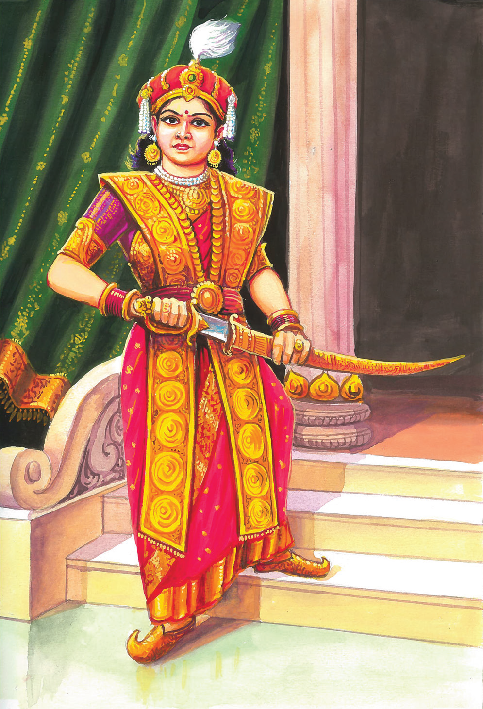
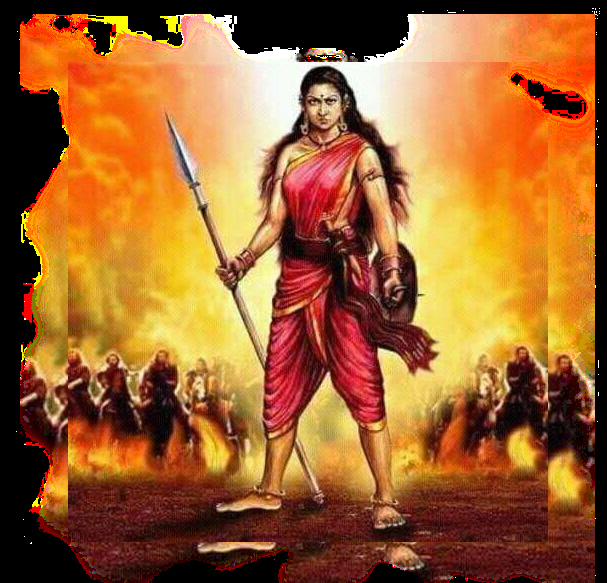
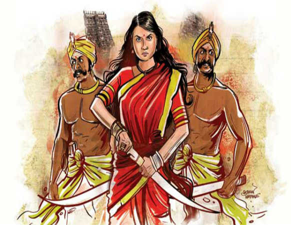
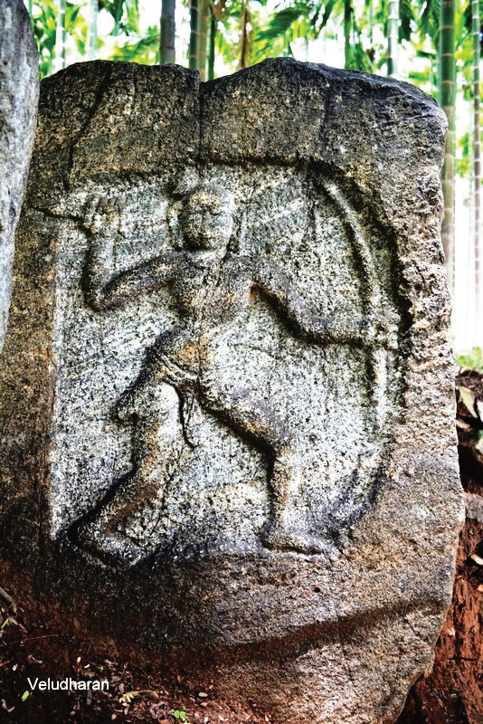

நுழையும் முன்
வணிகம் செய்ய வந்த ஆங்கிலேயர் சிறிது சிறிதாக நமது நாட்டைக் கைப்பற்றிக் கொண்டனர். அவர்களை எதிர்த்து வீரப்போர் புரிந்தவர்கள் பலர். அவர்களுள் வெற்றி பெற்றவர்கள் சிலரே. வீரமும் அதனால் விளையும் வெற்றியும் போருக்கு முக்கியமானவை. சூழ்நிலைக்கேற்பச் செயல்பட்டுப் பெறும் வெற்றியே சிறந்தது. விடுதலைபோரில் ஆண்களுக்கு நிகராகச் செயல்பட்டு வெற்றி வாகை சூடிய பெண்களுள் ஒருவரைப் பற்றி அறிவோம் வாருங்கள்.

இராமநாகபுரத்தை ஆட்சி செய்த செல்லமுத்து மன்னரின் ஒரே மகள் வேலுநாச்சியார். தாய்மொழியாக தமிழ் மட்டும் அல்லாமல் ஆங்கிலம், பிரெஞ்சு, உருது ஆகிய மொழிகளையும் சிறப்பாகக் கற்றார். சிலம்பம், குதிரையேற்றம், வாட்போர், விற்பயிற்சி ஆகியவற்றையும் முறையாகக் கற்றுக் கொண்டார். சிவகங்கை மன்னர் முத்துவடுகநாதரை மணந்து மகிழ்ச்சியோடு வாழ்ந்து வந்தார்.
காளையார்கோவிலில் நடைபெற்ற போரில் முத்துவடுகநாதர் ஆங்கிலேயரால் நயவஞ்சகமாகக் கொல்லப்பட்டார். வேலுநாச்சியார் ஆங்கிலேயரை வென்று சிவகங்கையை மீட்க உறுதி பூண்டார். திண்டுக்கல் கோட்டையில் தங்கி ஒரு படையைத் திரட்டிப் பயிற்சி அளித்தார்.
எட்டு ஆண்டுகளுக்குப் பின்…
திண்டுக்கல் கோட்டையில் ஆலோசனைக் கூட்டம் ஒன்று நடந்து கொண்டிருந்தது. கூட்டத்தின் நடுவே வீரமங்கை வேலுநாச்சியார் அமர்ந்திருந்தார். அவரைச் சுற்றி அமைச்சர் தாண்டவராயர், தளபதிகளாகிய பெரிய மருது, சின்ன மருது மற்றும் குறுநில மன்னர்கள் சிலர் இருந்தனர்.

” நாம் சிவகங்கையை இழந்து எட்டு ஆண்டுகள் ஆகிவிட்டன” என்று வேலுநாச்சியார் கவலை நிறைந்த குரலில் கூறினார்.
” கவலைப்படாதீர்கள் அரசியாரே! நாம் சிவகங்கையை மீட்கும் நான் நெருங்கிவிட்டது” என்றார் அமைச்சர் தாண்டவராயர்.
” அந்த இனிய நாளைத்தான் நானும் ஆவலுடம் எதிர்பார்த்துக் கொண்டு இருக்கிறேன்” என்றார் வேலுநாச்சியார்.
அப்போது வெளியே பெரும் ஆரவாரம் கேட்டது” மைசூரிலிருந்து ஐதர்அலி அனுப்பிய படை வந்துவிட்டது என நினைக்கிறேன்” என்றார் வேலுநாச்சியார்.
அப்போது அறையின் வாயிலில் வீரன் ஒருவன் வந்து நின்றான்.” அரசியாருக்கு வணக்கம். மைசூரில் இருந்து ஐயாயிரம் குதிரைப் படை வீரர்கள் வந்துள்ளனர் “என்றான். “அப்படியா! மகிழ்ச்சி. அவர்களை ஓய்வு எடுக்கச் சொல். நான் பிறகு வந்து பார்க்கிறேன் “என்றார் வேலுநாச்சியார். வீரன் வெளியேறினான்.
“ஐதர் அலி உறுதியாகப் படையை அனுப்புவார் என்று எனக்கு முன்பே தெரியும் அரசியாரே! என்றார் அமைச்சர் தாண்டவராயர்.
எதனால் அப்படிச் சொல்கிறீர்கள்?
“நாம் இருவரும் ஐதர்அலியைச் சந்திக்க மைசூர் சென்றோம் அல்லவா? அப்போது தாங்கள் அவரிடம் உருதுமொழியில் பேசினீர்கள். அப்போது அவர் முகத்தில் பெரிய மகிழ்ச்சி தோன்றியதை நான் கண்டேன் “என்றார் தாண்டவராயர்.
“நம் அரசியாரின் பன்மொழி அறிவு நமக்குப் பெரிய நன்மையைத் தந்திருக்கிறது “என்றார் சின்ன மருது.

“ஆம், நமது வீரர்களுடன் ஐதர்அலியின் ஐயாயிரம் குதிரைப்படை வீரர்களும் சேர்ந்து விட்டனர். ஆகவே நாளை சிவகங்கையை மீட்கப் புறப்படலாம் அல்லவா? “என்று கேட்டார் பெரிய மருது.
“என் கணவர் கொல்லப்பட்ட ஊர் காளையார்கோவில். எனவே, நாம் முதலில் காளையார்கோவிலைக் கைப்பற்றுவோம்: பிறகு சிவகங்கையை மீட்போம் “என்றார் வேலுநாச்சியார். அனைவரும் அதனை ஏற்றுக்கொண்டனர். மறுநாள் காளையார்கோவில் நோக்கி வேலுநாச்சியார் படை புறப்பட்டது. ஆண்கள் படைப்பிரிவுக்கு மருது சகோதரர்களும் பெண்கள் படைப்பிரிவுக்குக் குயிலியும் தலைமை ஏற்றனர்.
காளையார்கோவிலில் வேலுநாச்சியாரின் படைக்கும் ஆங்கிலேயரின் படைக்கும் இடையே கடுமையான போர் நடைபெற்றது. இறுதியில் ஆங்கிலேயரின் படை தோற்று ஒடியது.
“அரசியார் அவர்களே! காளையார்கோவில் நம் கைக்கு வந்து விட்டது. நாம் இப்போதே சிவகங்கைக் கோட்டையைத் தாக்கினால் ஆங்கிலேயரை விரட்டியடித்து விடலாம் என்றார் பெரிய மருது. “அவசரம் வேண்டாம். இப்போது சிவகங்கைக் கோட்டைக் கதவுகள் அடைக்கப்பட்டிருக்கும். வரும் விசயதசமித் திருநாள் அன்று கதவுகள் திறக்கப்படும், அப்போது நமது படைகள் உள்ளே நுழைலாம் என்றார் வேலுநாச்சியார்.
அப்போதும் பெரிய காவல் இருக்குமே என்றார் சின்ன மருது.
“விசயதசமி நாளில் கோட்டைக்குள் செல்வதற்குப் பெண்களுக்கு மட்டும் அனுமதி உண்டு. நமது பெண்கள் படைப்பிரிவினர் கூடைகளில் பூக்கள், பழங்கள், ஆகியவற்றுடன் ஆயுதங்களையும் மறைத்துக் கொண்டு கோட்டைக்குள் செல்லட்டும். உள்ளே அவர்கள் தாக்குதலைத் தொடங்கியதும் நமது ஆண்கள் படைப்பிரிவினரும் கோட்டைக்குள் நுழைந்து தாக்கட்டும். ஆங்கிலேயரை விரட்டியடித்து விடலாம் “என்றார் வேலுநாச்சியார்.
“அப்படியே செய்யலாம் அரசியாரே! இன்னும் ஒரு செய்தி. தங்களைக் காட்டிக் கொடுக்குமாறு உடையாள் என்னும் பெண்ணை ஆங்கிலேயர்கள் வற்புறுத்தினார்களாம். அவர் மறுத்ததால் கொன்றுவிட்டார்களாம். அவருக்கு நாம் உரிய முறையில் சிறப்புச் செய்ய வேண்டும் “என்றார் அமைச்சர் தாண்டவராயர்.

“அவருக்க ஒரு நடுகல் நடுவதற்கு ஏற்பாடு செய்யுங்கள் அமைச்ரே! அவரது பெருமையை எல்லோரும் அறிந்து கொள்ளட்டும் “என்றார் வேலுநாச்சியார்.
“அப்படியே செய்வோம் “என்றார் அமைச்சர்,
விசயதசமிக்கு முதல் நாள் சிவகங்கையை நோக்கிப் புறப்பட்டது படை. வழியில் உடையாளுக்காக நடப்பட்ட நடுகல் முன்பு குதிரையில் இருந்து இறங்கினார் வேலுநாச்சியார். தாம் வைத்திருந்த தாலியை எடுத்து அந்த நடுகல்லுக்குக் காணிக்கையாகச் செலுத்தி வணங்கினார். அருகில் நின்ற வீர்ர்கள் “உடையாள் புகழ் ஓங்குக “என்று முழக்கமிட்டனர்.
படை மறுநாள் காலை சிவகங்கையை அடைந்தது.
“அரசியாரே! நான் நமது பெண்கள் படைப்பிரிவுடன் மாறுவேடத்தில் உள்ளே செல்கிறேன். உள்ளே சென்றதும் அங்குள்ள ஆயுதக் கிடங்குக்கு எப்படியாவது தீ வைத்து விடுகிறேன். தீ எரிவது தெரிந்ததும் நம் படை உள்ளே நுழையட்டும் “என்று கூறினார். குயிலி.
“அப்படியே ஆகட்டும் “என்றார் வேலுநாச்சியார்.
குயிலியும் பெண்கள் படையினரும் கோட்டைக்குள் சென்றனர். சிறிது நேரத்தில் கோட்டைக்குள் பெரும் கூச்சல் எழுந்தது. உள்ளே உயரமாகத் தீ எரிவது தெரிந்தது.
“நமது படை உள்ளே நுழையட்டும் “என்று ஆணையிட்டார் வேலுநாச்சியார். படை வீரர்கள் கோட்டைக்குள் பாய்ந்து சென்றனர். ஆங்கிலேயரின் படையுடன் கடுமையாகப் போரிட்டனர். இறுதியில் ஆங்கிலப்படை தோல்வியடைந்து கோட்டையைவிட்டு ஓடியது.
“வெற்றி! வெற்றி!“ என்றுமுழக்கமிட்டனர் வீர்ர்கள்.
இந்த வெற்றிக்குக் காரணமான குயிலி எங்கே? என்று கேட்டார் வேலுநாச்சியார்.
“குயிலி தம் உடலில் தீ வைத்துக் கொண்டு ஆயுதக் கிடங்க்குள் குதித்துவிட்டார் “என வீர்ர்கள் கூறினார்கள்.
குயிலி தம் உயிரைத் தந்து நம்நாட்டை மீட்டுக் கொடுத்திருக்கிறார். அவரது துணிவுக்கும் தியாகத்திற்கும் வீரத்திற்கும் தலைவணங்குகிறேன் என்று உணர்ச்சிப் பெருக்கோடு கூறினார் வேலுநாச்சியார்.
வேலுநாச்சியாரின் வீரம், மருது சகோதரர்களின் ஆற்றல், ஐதர் அலியின் உதவி ஆகியவற்றோடு குயிலியின் தியாகமும் இணைந்ததால் சிவகங்கை மீட்கப்பட்டது.
தெரிந்து தெளிவோம்
கற்பவை கற்றபின்
இக்கதையை நாடகமாக வகுப்பறையில் நடித்துக் காட்டுக.